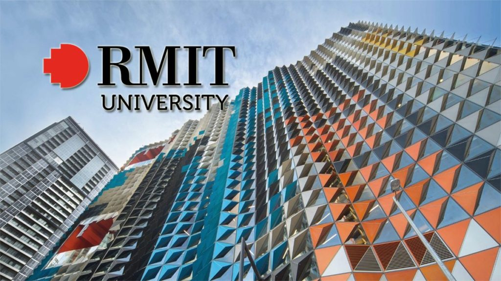
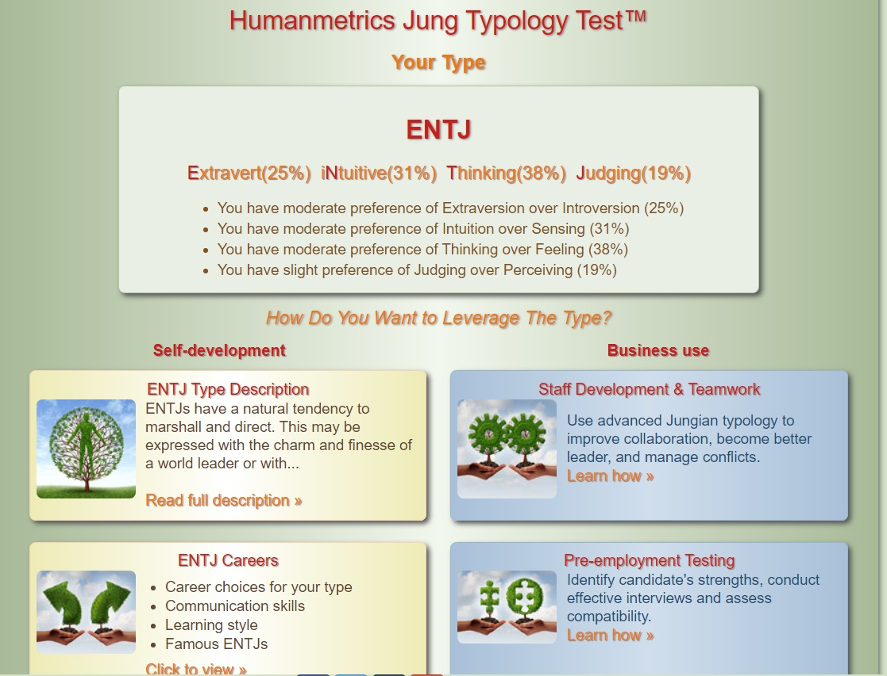
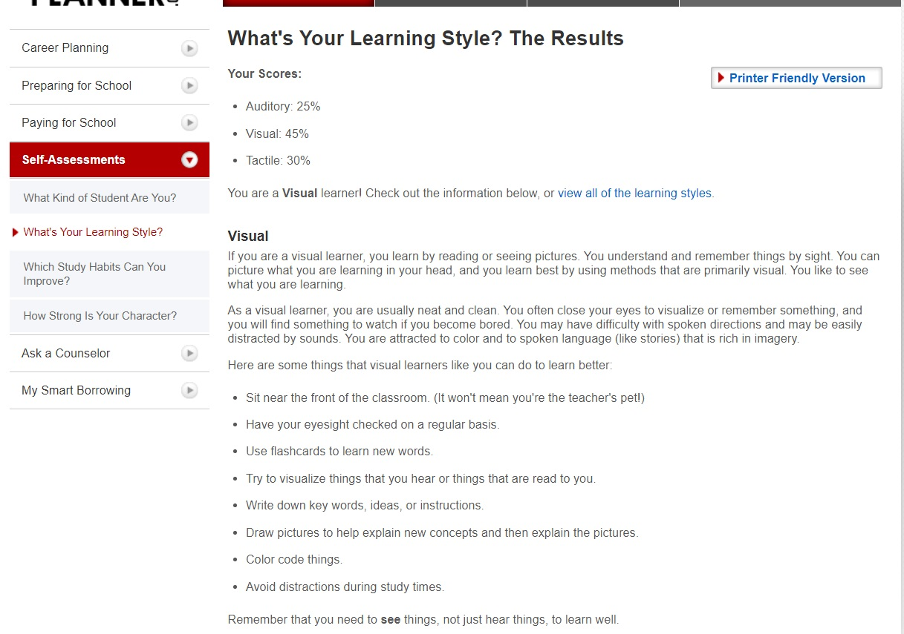
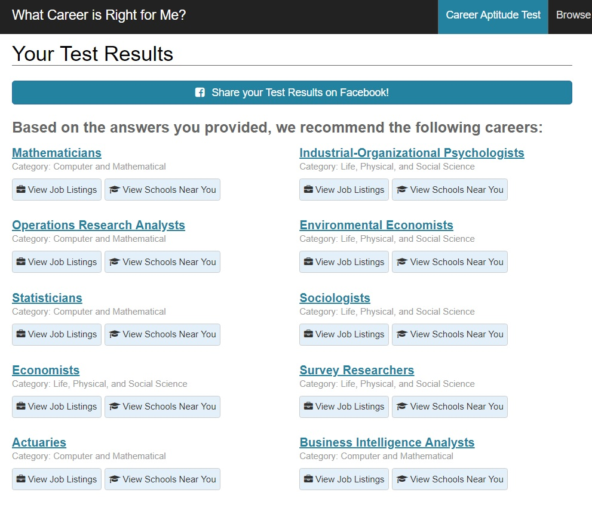
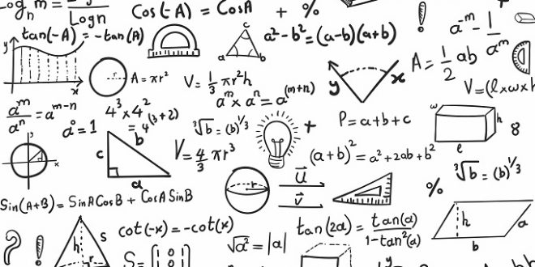

COSC2196
Introduction to Information Technology
Assessment 1: My Profile
Jack Lynch

Personal Information
Name: Jack Lynch
Student Number: s3782003
Email Address: s3782003@student.rmit.edu.au
Basic Background: I am 19 years of age. Always been interested in business and technology. Hoping to combine the two in my career. I was born in Melbourne; Australia and my highest level of education is completing secondary school. I only speak English but am hoping to pick up Mandarin or French in the future. I have two Labradors and have been an Essendon member since I was born. When I can, I attend most games.
Interest in Information Technology
What is your interest in IT? When did your interest in IT start? Was there a particular event or person that sparked your interest? Outline your IT experience (if any).
My interest in IT stems from the convenience it causes in our everyday lives. Even in my lifetime, the changes have been so dramatic that it has altered the way I plan my day. From the age of 5 I was obsessed with the idea of a portable web browser, not like a laptop, something I could control with the swipe of a finger. This is now a reality and accessible for most. The everchanging nature of the field is what interests me the most. My first memory of technology was using the family PC to play a bootleg version of Super Mario Brothers 3. I was addicted to that game, simply because of the idea that I could control this character with just a few keys. I haven’t stopped playing video games since. My IT experience is quite basic. I studied the subject throughout VCE, achieving a study score of 41. In my previous job I would conduct database management and website maintenance.
Why did you choose to come to RMIT?
My older siblings studied international business at RMIT. After trying it myself for a semester I realised I wasn’t gaining any hard skills from the course and became concerned of how employable this would make me. I reverted to the simple approach of sticking to what you like. I have also had family friends’ complete courses at RMIT which they enjoyed very much.
What do you expect to learn during your studies?
Upon completion of the course, I am hoping to understand multiple programming languages and IT systems. I would also like to be confident in my knowledge of IT business implementations. On top of these skills, I would like to improve my work ethic and study habits as this will benefit my in future professions.
Ideal Job
The job advertisement itself. Include a link, and a snapshot of it (in case the link expires before the assignment deadline).
A description (in your own words) of the position, and particularly what makes this position appealing to you.
The official position name is “Business Development Manager – IT”. The company requesting the position is named Altitude Recruitment and they are an Australian owned Business and IT services company established in the 1980’s. The company is seeking an experienced business development manager who will enhance their current processes and maintain their reputation. This position is appealing to me because it is a combination of two of my interests and I believe with some experience and the completion of this course, I would be able to do this job adequately.
A description (in your own words) of the skills, qualifications and experience required for the position.
This position requires:
A description (in your own words) of the skills, qualifications and experience you currently have.
The skills I currently have:
A plan describing how you will obtain the skills, qualifications and experience required for the position, building on those you have now. This need not be greatly detailed, (and will probably change significantly over time anyway), try to be as specific as you can.
My career plan for the next 4-5 years to make me eligible for a position like this heavily depends on the completion of this course. Upon completion or in my final year, I will search for an internship at an established technology company in order to bolster the experience section of my CV. Working in the industry would be the most practical way to gain evidence of sales results and general improvements to a business. With an internship, I would have the opportunity to shadow a more experienced employee and gain the skills required for a position like this. I will continue to work on side projects like app development during this course which will also enhance my skill set.
Personal Profile
Myers-Briggs Test Results

Learning Style Test

Career Aptitude Test

What do the results of these tests mean for you?
The results of the Myers-Briggs Test indicate that my type is quite balanced. It stated that I prefer thinking over feeling, intuition over sensing and judging over perceiving. I believe these traits would be useful in a leadership role when having to make important decisions with a limited timeframe. Thinking over feeling also suggests that I would make logical decisions with solid reasoning. My learning style is visual, I like to demonstrate things with tangible props or on a whiteboard for example. Diagrams and graphics also assist my learning process. When processing new information, I prefer a combination of images and text as opposed to plain text. The final test I completed was a career aptitude test which indicated that a job with computers would be the most appropriate. One suggestion was business analyst in IT which will hopefully be my future profession.
How do you think these results may influence your behaviour in a team?
The test results indicate that I would assume a leadership role in a team and try to make logical decisions and ensure the task is progressing. I would try and bring enthusiasm to the task as I am passionate about the subject and would attempt to encourage and motivate other team members. I would also promote the use of visual aids to assist a presentation for example.
How should you take this into account when forming a team?
It would be beneficial to find team members with skill sets and personality traits that compliment my own. When combing multiple levels of experience and different opinions, a more complete product is created, and it will appear considerate of many approaches. Perhaps someone with a creative flair and a more emotional approach to tasks would be beneficial. Ideally, other team members would also like to be organised and punctual, this would mean the final product is delivered on time and complete to the best of our abilities.
Project Idea
Overview
The project I have in mind will be an educational IOS application available on the iPhone/iPad App Store. The application will revolve around simple mathematics and will be targeted at children (students) from the ages of 6 to 12. I am aiming to create an application with a minimalistic design that is attractive and sleek. It will be created using the language of Swift in the program XCode, which is free app development software available to all mac owners. The project will be based off a test project I completed before starting this course as I wanted to improve my programming skills and thought this would be beneficial to students.
Motivation
In a 2018 study by the Programme for International Student Assessment, it was found that a test group of 15-year-old mathematics students were roughly 3.5 years behind Chinese students of the same age. The aim for my application is to be used between the ages of 6-12 to improve the fundamental maths ability of students. An alternate target audience would be adults aged 20 and above. Competitive games are quite popular and the idea of being able to brag to your friends about your score would be appealing to a large audience. Many students born around 2000 grew up with Mathletics which was a fun, competitive way of learning fundamental mathematics. The nostalgia factor for this audience could draw them back in to a game of this style.
Description
The product will be a simple IOS application that will generate random sums or equations for its users to solve. As the aim is to keep it simple, the questions will only revolve around addition, subtraction, and multiplication. The design of the application will hopefully reflect its purpose as well. Sleek, consistent colours, consistent fonts and backgrounds and simple navigation mechanics. To illustrate my vision for this application I will describe how an average process with the app.
- Addition
- Subtraction
- Multiplication
Because the app is so simple in terms of it’s features and use, the main drawing point would be the competitive aspect it provides. Ideally, users would share their scores on social media or in group chats with friends, promoting further use of the app to better their own scores, as well as their friends. Apps like “Flappy Bird” from 2014 have caused millions of users to play endlessly in order to beat their friends. The concept for my application is very similar.
Because the app would fall into the education genre, it could be used in the classroom. With technology being implemented in almost every classroom now, in the form of laptops, tablets, projectors and interactive whiteboards, it would be a fun way of using technology in a mathematics class. A team-based challenge could be created around the application, encouraging students to work with their classmates and encourage them to improve their basic mathematics.
As previously stated, the app and the features it presents are very simple. The real complexity comes with the context of its use.

Tools and Technologies
In terms of physical equipment that will be used to create this application, my 2019 MacBook Pro is all that is required. The software used is called XCode and this is a free application development tool created by Apple that is free to all MacBook owners. The program uses the language of Swift, which is a variation of python. In order to test my application, I will be using the 2018 iPhone XS Max. It will be beneficial to see the application being used on its intended hardware. For graphics and user interface design I will use Adobe Photoshop for backgrounds, buttons and any other images.
Skills required
This project should be very possible with a limited understanding of swift as the concepts for the application do not have many moving parts. I will need to ensure that I gain some experience in graphical application design on photoshop as my previous experience was with photography. Research will be the most essential element for this project in terms of the visuals. I will need to assess how other applications have used photoshop to create buttons and backgrounds as it needs to appear professional.
Outcome
For the project to be considered successful, I would like to see 100 concurrent users per day. Although small, it would be impressive for an app developed as a university project. The original problem was the mathematics ability of Australian students and it would be difficult to determine the impact of an application on national test results. It would be far easier to see if the other goal was achieved which was to create a competitive educational application. If users are sharing scores with friends and on social media, the app is a success.
Bibliography
ABC News. 2020. Australian Students Slip In Global Maths, Reading And Science Rankings. [online] Available at: <https://www.abc.net.au/news/2019-12-03/australia-education-results-maths-reading-science-getting-worse/11760880> [Accessed 22 March 2020].
Educationplanner.org. 2020. What's Your Learning Style? 20 Questions. [online] Available at: <http://www.educationplanner.org/students/self-assessments/learning-styles-quiz.shtml> [Accessed 22 March 2020].
Humanmetrics.com. 2020. Personality Test Based On C. Jung And I. Briggs Myers Type Theory. [online] Available at: <http://www.humanmetrics.com/cgi-win/jtypes2.asp> [Accessed 22 March 2020].
SEEK. 2020. [online] Available at: <https://www.seek.com.au/job/41176553?type=standout#searchRequestToken=e6145dc5-0b07-4a33-96ba-1f4db3afe554> [Accessed 22 March 2020].
Whatcareerisrightforme.com. 2020. Test Results - What Career Is Right For Me?. [online] Available at: <https://www.whatcareerisrightforme.com/career-aptitude-test-results.php?id=12555445> [Accessed 22 March 2020].
Images
Scholarship-positions.com. 2020. [online] Available at: <https://scholarship-positions.com/wp-content/uploads/2017/08/RMIT-University-Project-Management-Achievement-Scholarships-in-Australia-2019-1024x576.jpg> [Accessed 22 March 2020].
I0.wp.com. 2020. [online] Available at: <https://i0.wp.com/marketbusinessnews.com/wp-content/uploads/2018/11/Information-Technology-thumbnail.jpg?fit=509%2C267&ssl=1&resize=1200%2C900> [Accessed 22 March 2020].
School-news.com.au. 2020. [online] Available at: <https://www.school-news.com.au/wp-content/uploads/2019/08/AdobeStock_216539624-660x330.jpg> [Accessed 22 March 2020].